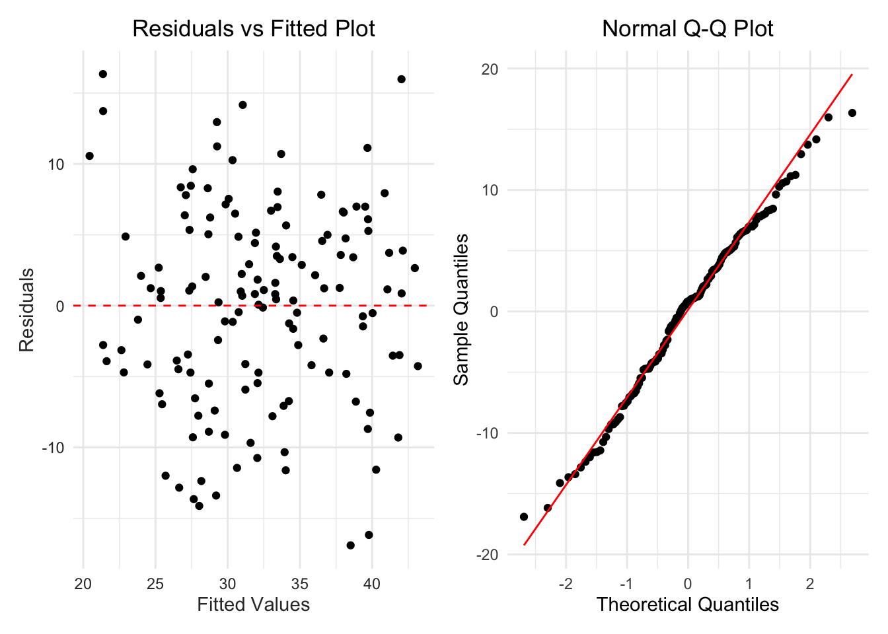
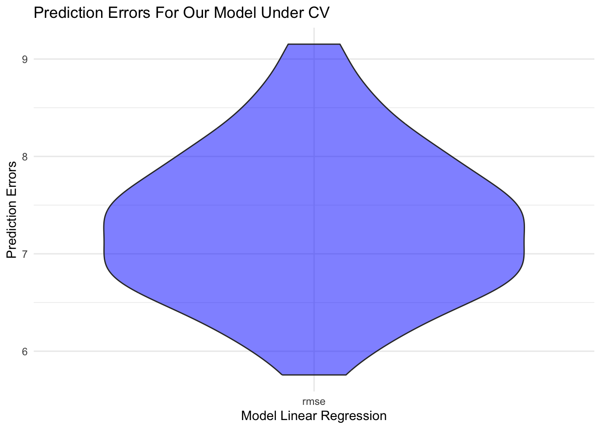
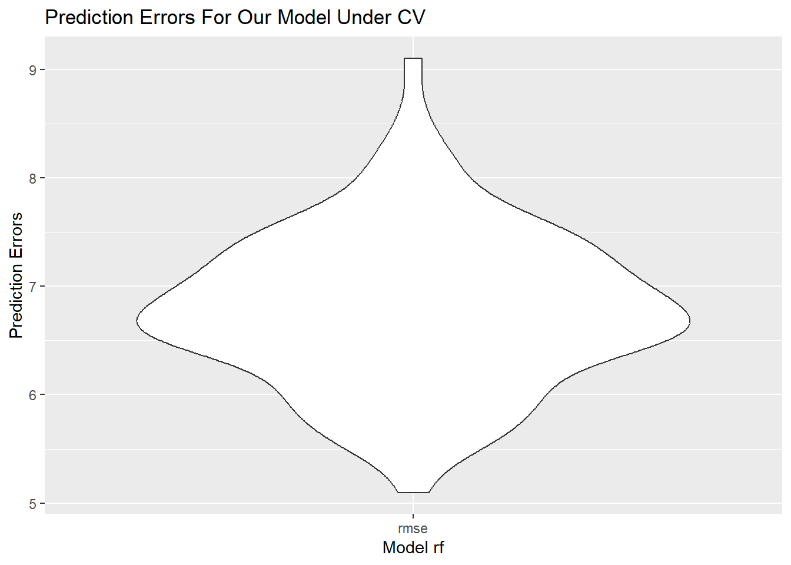
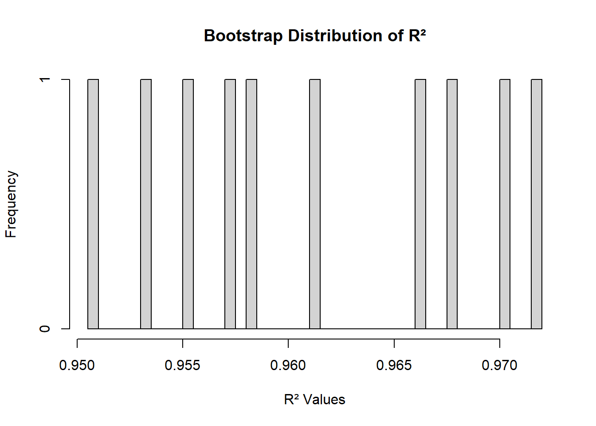
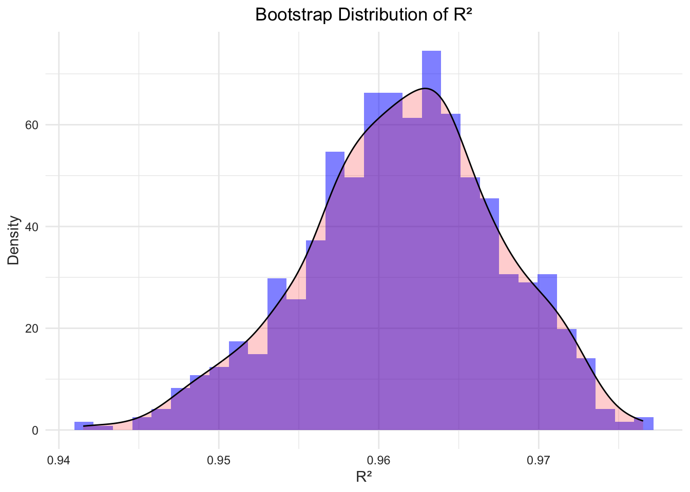

We used data from the years 2018 to 2020 to train our models, and data from 2021 to perform prediction.
All these datasets have been filtered to remove any missing values and do not contain any outliers, ensuring that the data quality is high. This preprocessing step lays a strong foundation for building accurate and reliable models.
data = readRDS("data_for_model.rds")
training_data = filter(data, year >= 2018 & year <= 2020) |>
select(-c(state,year))
testing_data = filter(data, year == 2021) |>
select(-c(state,year))The reason for initially choosing linear models in statistical analysis is their simplicity and ease of understanding. These models, by representing relationships in a straightforward linear manner, make it easier for us to comprehend how different variables affect the death rate we care about.
Moreover, linear models are known for their robustness, offering reliable performance even with various types of data and statistical errors. Importantly, they serve as an effective benchmark in more complex modeling processes.
By starting with a linear model, we can establish a baseline performance level, against which the effectiveness of more sophisticated models can be measured. This stepwise approach helps in ensuring that the complexity of a model is justified by a significant improvement over the simpler linear model.
model = lm(death_rate ~ employment + hc_exp + income + edu_level + cardio_rate + smoke_rate + elder_rate, data = training_data)
summary(model) |>
broom::tidy() |>
knitr::kable()| term | estimate | std.error | statistic | p.value |
|---|---|---|---|---|
| (Intercept) | 68.3037142 | 13.4233735 | 5.0884164 | 0.0000012 |
| employment | 24.9223618 | 16.5331015 | 1.5074221 | 0.1340921 |
| hc_exp | -0.0012826 | 0.0007332 | -1.7492692 | 0.0825687 |
| income | -0.0002319 | 0.0001776 | -1.3061814 | 0.1937624 |
| edu_level | -45.7011712 | 21.4826355 | -2.1273540 | 0.0352503 |
| cardio_rate | 180.2845378 | 51.4160324 | 3.5063876 | 0.0006212 |
| smoke_rate | -11.4113239 | 31.4644509 | -0.3626735 | 0.7174288 |
| elder_rate | -152.9455140 | 35.4789569 | -4.3108797 | 0.0000316 |
broom::glance(model) |>
mutate(model = "Full Linear Regression") |>
select(model, r.squared, adj.r.squared, p.value, AIC, BIC) |>
knitr::kable()| model | r.squared | adj.r.squared | p.value | AIC | BIC |
|---|---|---|---|---|---|
| Full Linear Regression | 0.3990315 | 0.367162 | 0 | 956.2865 | 982.7613 |
Based on the table of full model, some of the predictors are statistically significant while others are not, so we need a further selection of the model.
We use Backward Elimination for constructing our linear regression model to enhance its efficiency and interpretability. This method systematically removes the least significant variables, ensuring that only the most impactful predictors are retained. Consequently, it helps in reducing model complexity and avoiding overfitting, resulting in a more robust and meaningful model.
backward_result = step(model, direction = 'backward', trace = 0)
broom::tidy(backward_result) |>
knitr::kable()| term | estimate | std.error | statistic | p.value |
|---|---|---|---|---|
| (Intercept) | 74.2170216 | 7.6615066 | 9.687001 | 0.0000000 |
| hc_exp | -0.0014021 | 0.0005712 | -2.454649 | 0.0153748 |
| edu_level | -47.8686408 | 12.8765984 | -3.717491 | 0.0002939 |
| cardio_rate | 146.1913832 | 46.7572070 | 3.126606 | 0.0021660 |
| elder_rate | -155.1015760 | 33.8923959 | -4.576294 | 0.0000106 |
selected_model = lm(death_rate ~ hc_exp + edu_level + cardio_rate + elder_rate, data = training_data)
summary(selected_model)|>
broom::tidy() |>
knitr::kable()| term | estimate | std.error | statistic | p.value |
|---|---|---|---|---|
| (Intercept) | 74.2170216 | 7.6615066 | 9.687001 | 0.0000000 |
| hc_exp | -0.0014021 | 0.0005712 | -2.454649 | 0.0153748 |
| edu_level | -47.8686408 | 12.8765984 | -3.717491 | 0.0002939 |
| cardio_rate | 146.1913832 | 46.7572070 | 3.126606 | 0.0021660 |
| elder_rate | -155.1015760 | 33.8923959 | -4.576294 | 0.0000106 |
After applying Backward Elimination, we have obtained a linear regression model that is streamlined and comprises only the statistically significant predictors.
pre =
training_data |>
add_predictions(selected_model) |>
add_residuals(selected_model)
p1 <- ggplot(pre, aes(x = pred, y = resid)) +
geom_point() +
geom_hline(yintercept = 0, linetype = "dashed", color = "red") +
labs(
x = "Fitted Values",
y = "Residuals",
title = "Residuals vs Fitted Plot"
) +
theme_minimal() +
theme(
plot.title = element_text(hjust = 0.5),
axis.text = element_text(color = "grey20"),
axis.title = element_text(color = "grey20")
)
residuals = resid(selected_model)
p2 <- ggplot(as.data.frame(residuals), aes(sample = residuals)) +
stat_qq() +
stat_qq_line(color = "red") +
labs(
title = "Normal Q-Q Plot",
x = "Theoretical Quantiles",
y = "Sample Quantiles"
) +
theme_minimal() +
theme(
plot.title = element_text(hjust = 0.5)
)
library(patchwork)
p1 + p2
The residuals versus fitted plot shows a random distribution of residuals around the zero line without any discernible patterns, indicating good model fit and homoscedasticity. No obvious outliers are present, suggesting that the linear regression model assumptions are likely being met.
The QQ plot suggests although the slightly deviations at the tails indicate potential non-normality, the residuals from a statistical model are approximately normally distributed around the center.
broom::glance(selected_model) |>
mutate(model = "Selected Linear Regression") |>
select(model, r.squared, adj.r.squared, p.value, AIC, BIC) |>
knitr::kable()| model | r.squared | adj.r.squared | p.value | AIC | BIC |
|---|---|---|---|---|---|
| Selected Linear Regression | 0.3854173 | 0.3672074 | 0 | 953.4226 | 971.0725 |
To assess the performance and reliability of a predictive model, we use the Cross-validation method to divide the training data into 100 subsets to ensure that each data point is used for both training and testing. This helps assess how well the model generalizes to new, unseen data.
# generate a cv dataframe
cv_df =
crossv_mc(training_data, 100) %>%
mutate(
train = map(train, as_tibble),
test = map(test, as_tibble))
# fit the model to the generated CV dataframe
cv_df =
cv_df |>
mutate(
model = map(train, ~lm(death_rate ~employment+hc_exp+income+edu_level+cardio_rate+smoke_rate+elder_rate, data = .x)),
rmse = map2_dbl(model, test, ~rmse(model = .x, data = .y)))
# plot the prediction error
cv_df |>
select(rmse) |>
pivot_longer(
everything(),
names_to = "model",
values_to = "rmse") %>%
ggplot(aes(x = model, y = rmse)) +
geom_violin(fill = "blue", alpha = 0.5) +
labs(
title = "Prediction Errors For Our Model Under CV",
x = "Model Linear Regression",
y = "Prediction Errors"
) +
theme_minimal()+
theme(
plot.title = element_text(hjust = 0.5),
axis.text = element_text(color = "grey20"),
axis.title = element_text(color = "grey20")
)
The violin plot indicates a relatively concentrated distribution of RMSE values for the linear regression model during cross-validation, primarily within the 7 to 8 range, suggesting consistent prediction errors without extreme variability. The symmetric shape around the center suggests a median error likely within this range, implying a stable model performance.
Bootstrapping, involving repeated sampling with replacement, ensures that we are not just creating a model that works well for our current dataset (as indicated by a high R²) but also one that is likely to perform consistently across different, unseen datasets.
training_data |>
modelr::bootstrap(n = 1000) |>
mutate(
models = map(strap, \(df) lm(death_rate ~employment+hc_exp+income+edu_level+cardio_rate+smoke_rate+elder_rate, data = df)),
results = map(models, broom::glance)) |>
select(results) |>
unnest(results) |>
ggplot(aes(x = r.squared)) +
geom_histogram(aes(y = ..density..), bins = 30, fill = 'blue', alpha = 0.5) +
geom_density(alpha = .2, fill = "red") +
labs(title = "Bootstrap Distribution of R²", x = "R²", y = "Density") +
theme_minimal()
Despite all the varibles are significant, R² value is around 0.4, which is suggests potential nonlinear relationships or multicollinearity issues in our dataset.
The Random Forest Model is an ensemble learning method, play an important role in classification and regression tasks by building multiple decision trees and aggregating their outputs. It handles complex datasets well and is robust against overfitting. Thus, we consider switching to Random Forest when linear models has limitations. It effectively captures complex, non-linear relationships in data, offering improved accuracy and deeper insights.
library(randomForest)
rf_model <- randomForest(death_rate ~ employment+hc_exp+income+edu_level+cardio_rate+smoke_rate+elder_rate, data = training_data)We also use cross validation and boostrap to see the performance and reliability of the random forest model as we did to the linear model.
# generate a cv dataframe
cv_df =
crossv_mc(training_data, 100) %>%
mutate(
train = map(train, as_tibble),
test = map(test, as_tibble))
# fit the model to the generated CV dataframe
cv_df =
cv_df |>
mutate(
model = map(train, ~randomForest(death_rate ~employment+hc_exp+income+edu_level+cardio_rate+smoke_rate+elder_rate, data = .x)),
rmse = map2_dbl(model, test, ~rmse(model = .x, data = .y)))
# plot the prediction error
cv_df |>
select(rmse) |>
pivot_longer(
everything(),
names_to = "model",
values_to = "rmse") %>%
ggplot(aes(x= model, y = rmse)) +
geom_violin(fill = "blue", alpha = 0.5) +
labs(
title = "Prediction Errors For Our Model Under CV",
x = "Model Random Forest",
y = "Prediction Errors"
) +
theme_minimal()+
theme(
plot.title = element_text(hjust = 0.5),
axis.text = element_text(color = "grey20"),
axis.title = element_text(color = "grey20")
)
From the plot, the RMSE is predominantly below 7, ranging from approximately 5.5 to 9. This level of RMSE is lower compared to that of the linear models we’ve previously evaluated, indicating that this model performs better. Lower RMSE values signify more accurate predictions, thus suggesting that this model is a more effective predictor for our dataset.
# R²
rf_predictions <- predict(rf_model, training_data)
r_squared <- cor(training_data$death_rate, rf_predictions)^2
data.frame(
model = "Random Forest Model",
r.squard = r_squared
) |>
knitr::kable()| model | r.squard |
|---|---|
| Random Forest Model | 0.9325145 |
Calculated using the training data, the R² is 0.9325145, which indicates a very high level of explained variance in the model. This suggests that our model is highly effective in capturing and representing the relationships within the training dataset.
We perform bootstrapping to evaluate the model’s stability and reliability.
library(randomForest)
library(boot)
bootstrap_r2 <- function(data, indices) {
boot_data <- data[indices, ]
model <- randomForest(death_rate ~employment+hc_exp+income+edu_level+cardio_rate+smoke_rate+elder_rate, data = boot_data)
predictions <- predict(model, boot_data)
r_squared <- cor(boot_data$death_rate, predictions)^2
return(r_squared)
}
results <- boot(data = training_data, statistic = bootstrap_r2, R = 1000)
# Create a data frame from the bootstrapped R² values
results_df <- data.frame(R_squared = results$t)
# Use ggplot2 to create a histogram with a density curve
ggplot(results_df, aes(x = R_squared)) +
geom_histogram(aes(y = ..density..), bins = 30, fill = 'blue', alpha = 0.5) +
geom_density(alpha = .2, fill = "red") +
labs(title = "Bootstrap Distribution of R²", x = "R²", y = "Density") +
theme_minimal()+
theme(
plot.title = element_text(hjust = 0.5),
axis.text = element_text(color = "grey20"),
axis.title = element_text(color = "grey20")
)The bootstrap results of the Random Forest model showing an R² value around 0.96 indicate a high level of accuracy and consistency. This suggests that the model is not only effective in explaining a large portion of the variance in the data but also demonstrates robust performance across different samples.
testing_data$predicted_death_rate <- predict(rf_model, testing_data)
ggplot(testing_data, aes(x = death_rate, y = predicted_death_rate)) +
geom_point(color = "black") + # Add the actual data points
geom_smooth(method = "lm",se = FALSE, color = "blue") +
labs(title = "Linear Regression Predictions",
x = "Actual Values",
y = "Predicted Values") +
theme_minimal()+
theme(
plot.title = element_text(hjust = 0.5),
axis.text = element_text(color = "grey20"),
axis.title = element_text(color = "grey20")
)
Using the 2021 data to predict with the Random Forest model, we observed that the data points largely align with the fitted line, especially within the middle range of actual values. There are some outliers, particularly at higher actual values, but this indicates that the model’s predictive accuracy is reasonable within the normal range.
importance_values <- importance(rf_model)
feature_importance <- data.frame(Feature = rownames(importance_values),
Importance = importance_values[,1]) %>%
arrange(Importance) %>%
mutate(Feature = factor(Feature, levels = Feature))
plot_ly(feature_importance, x = ~Importance, y = ~Feature, type = 'bar', orientation = 'h') %>%
layout(title = "Feature Importance from Random Forest Model",
xaxis = list(title = "Importance"),
yaxis = list(title = "Feature"))After careful consideration, we chose the random forest to be our
final mofel. And according to the model, edu_level emerges
as the most important feature, which suggests a strong correlation
between educational attainment and mortality rates in Alzheimer’s
patients. Following it,hc_exp stands as the second most
crucial factor, indicating the importance of healthcare resources in
managing Alzheimer’s disease. Other features like
smoke_rate, elder_rate,
employment, income, and
cardio_rate are ranked in descending order of importance,
indicating a gradual decrease in their significance within the model.
These findings highlight the multifaceted nature of factors affecting
Alzheimer’s patient outcomes and underscore the importance of
socioeconomic and lifestyle factors in addition to healthcare
provision.